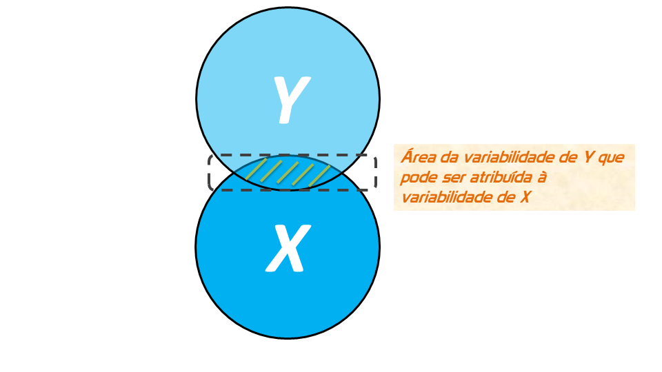
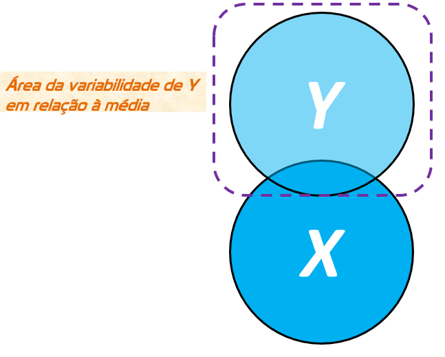
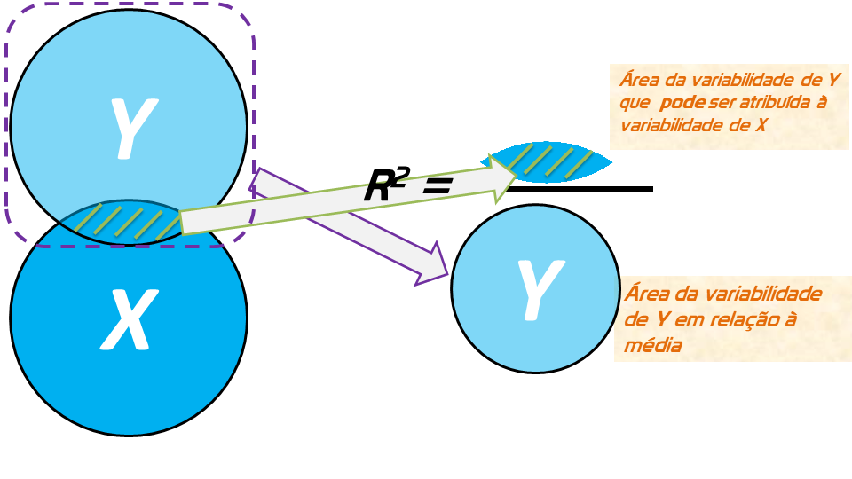
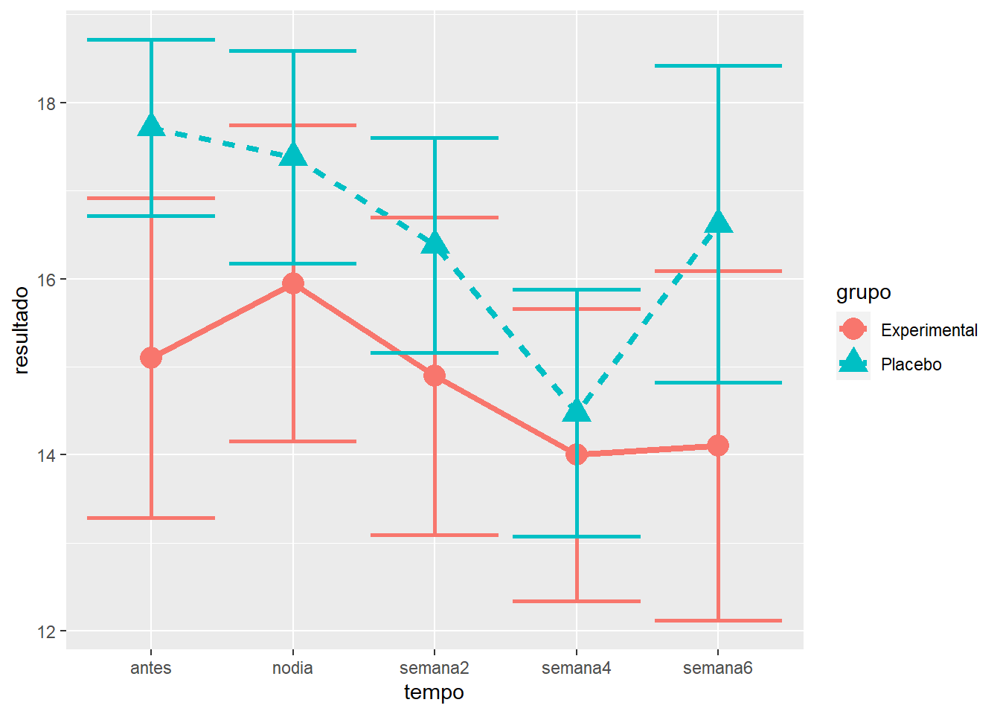
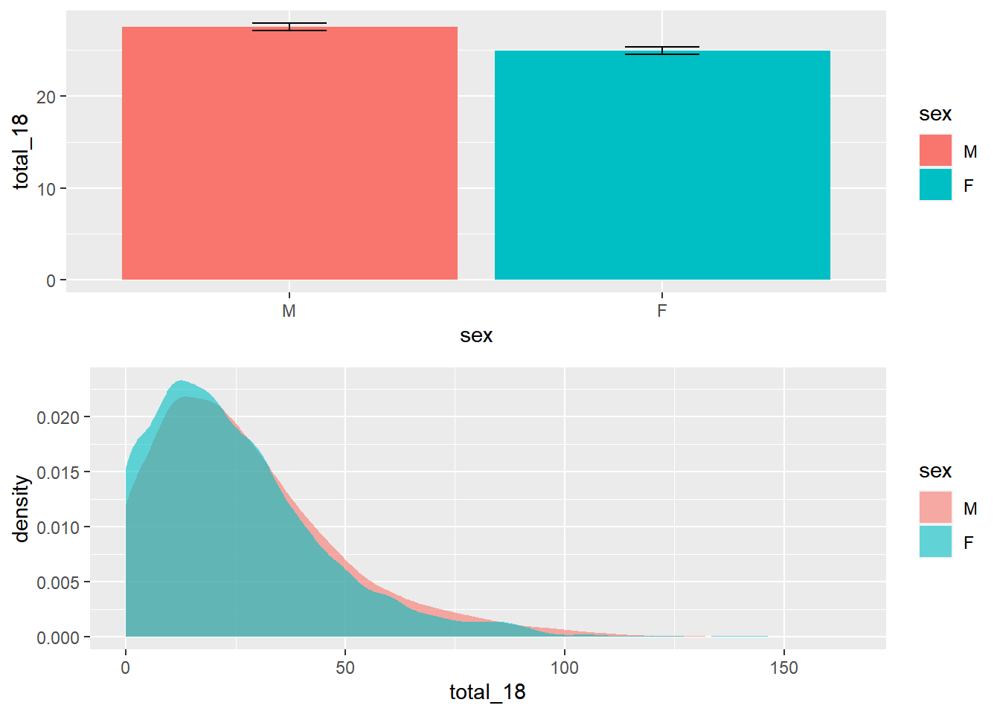
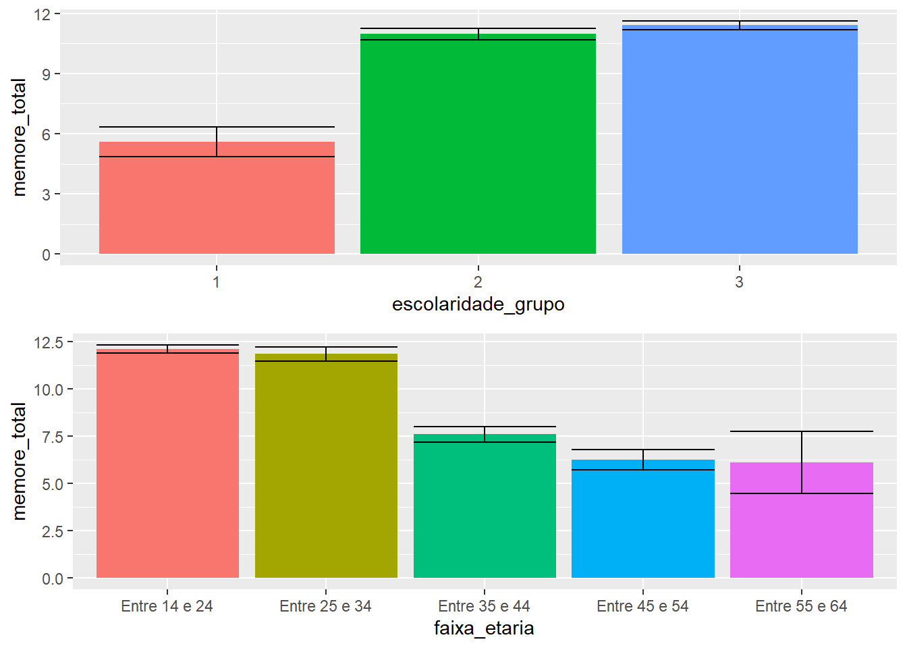
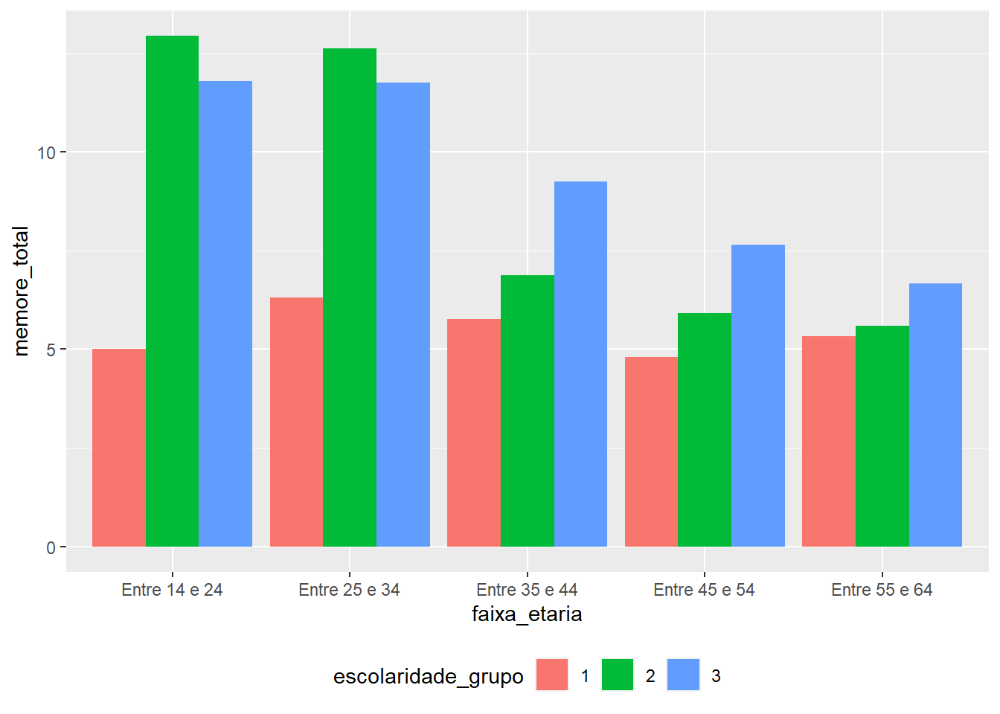
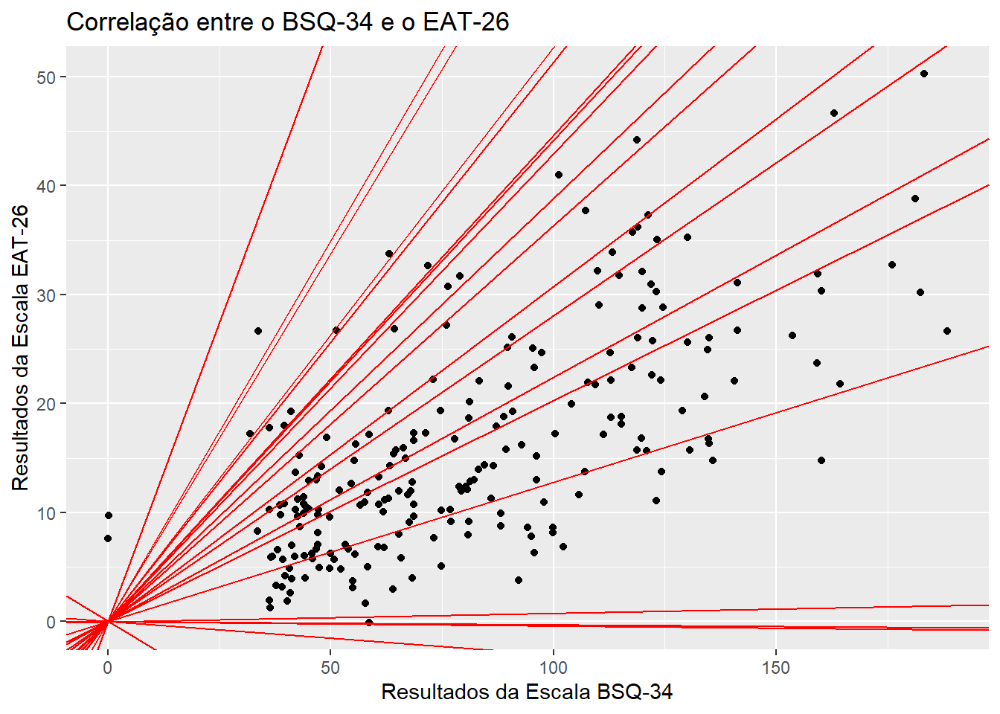
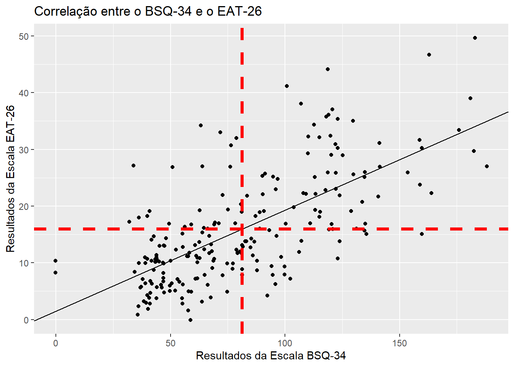
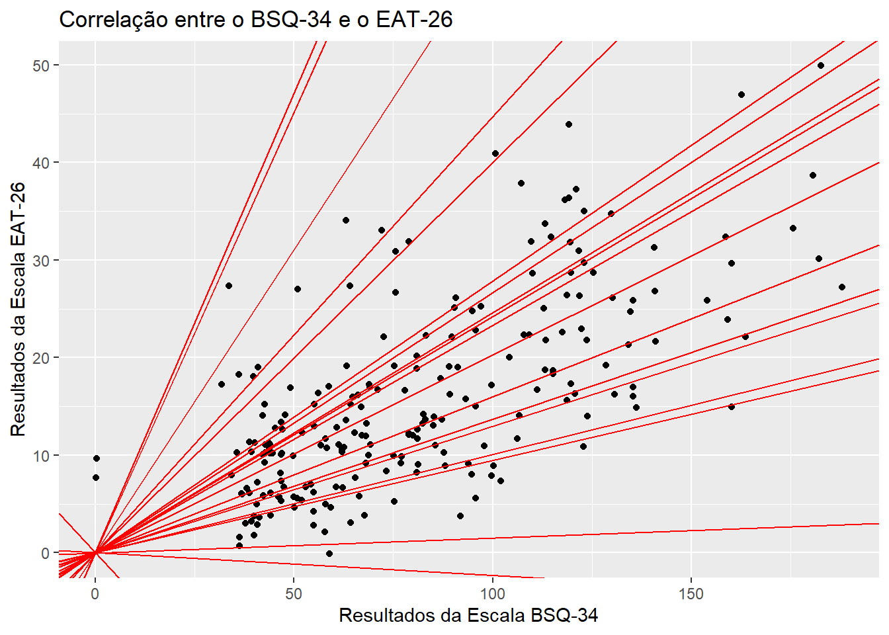

Capítulo 7 Regressão linear simples
Os modelos de regressão modelos estatísticos que relacionam o comportamento de uma variável resposta (Y) como uma função de variáveis condicionantes (X). Em larga escala, eles substituem os outros testes paramétricos vistos até agora. Assim, quase tudo o que foi visto durante os capítulos anteriormente são casos especiais de modelos de regressão. No entanto, é possível estudar tais modelos tanto de uma maneira operacional, com foco totalmente pragmático e aderente às recomendações tradicionais dos livros de estatística, ou de uma forma detalhada, em que ao estudar os modelos de regressão, quase que muitos conceitos da estatística inferencial e estatística matemática são revisitados.
Nesse capítulo, iremos ver ambas as maneiras, mas preservando o foco na capacidade operacional.
Conceitualmente, a regressão linear é apresentada como::
\[y_i = b_0 + b_1X{_1}_i + \epsilon_{i}\]
\(y_i\) representa a variável dependente
\(b_0\) é o intercepto (coeficiente linear)
\(b_1\) é a inclinação (coeficiente angular)
\(\epsilon_{i}\) é o erro/resíduo
7.1 Legenda
Diferentes termos são empregados em modelos de regressão A legenda a seguir visa auxiliar no entendimento de cada um deles e aproximar o leitor a conceitos amplos utilizados em modelos lineares:
intercepto (constante) - \(b_0\): Valor previsto de Y quando X = 0
Inclinação (slope) - \(b_i \forall i \neq 0\): A diferença média em unidades da variável dependente prevista em Y quando se altera uma unidade de X.
SSR: Soma dos Quadrados da Regressão
SSE: Soma dos Quadrados dos Erros
SST: Soma dos Quadrados Total
Variabilidade total SST = SSR + SSE
\(R^2\) ou Coeficiente de Determinação: A porcentagem de variação da variável dependente (Y) que pode ser atribuída à variabilida da(s) variável (is) independente(s) (X)
\(R^2_{adj}\) ou Coeficiente de Determinação ajustado: Pondera a porcentagem de variação da variável dependente (Y) que pode ser atribuída à variabilida da(s) variável (is) independente(s) (X) pelo número de variáveis explicativas e pelo número de observações da amostra. É particularmente útil quando deseja-se comparar modelos de regressão múltipla que prevêem a mesma variável dependente, pois penaliza aquele modelo com maior número de variáveis independentes.
RMSEA (\(Res. St. Error\) ou Erro padrão dos resíduos): Desvio padrão dos valores previstos da variável dependente ao redor da linha de regressão estimada
O conhecimento das fórmulas fechadas também auxilia no entendimento da modelagem.
Soma dos Quadrados da Regressão: \(SSR = \sum_{i=1}^{n}(\hat{y} - \bar{y})^2\)
Soma dos Quadrados dos Erros: \(SSE = \sum_{i=1}^{n}(y_i - \hat{y})^2\)
Soma dos Quadrados Total: \(SST = \sum_{i=1}^{n}(y_i - \bar{y})^2\)
Variabilidade total \(SST = SSR + SSE\)
\(R^2\) ou Coeficiente de Determinação: $ R^2 = = 1- $
Erro quadrático médio (MSE): \(SSE = \sum_{i=1}^{n}(y_i - \hat{y})^2 /N-K\)
\(R^2_{adj}\) ou Coeficiente de Determinação ajustado: \(1-\frac{MSE}{MSR}\)
\(Res. St. Error = \sqrt\frac{SSE}{N-K}\): Erro padrão dos resíduos, se refere ao desvio padrão dos valores previstos da variável dependente ao redor da linha de regressão estimada
É possível citar ao menos três formas de explicar modelos de regressão. Evidentemente, todas são interligadas, mas cada qual apresenta uma ênfase didática diferente. Nesse sentido, a forma mais “conceitual” conta com conjuntos para explicitar o tema, a forma “correlacional” parte de um gráfico de dispersão e a forma “analítica” traz conceitos matemático. A forma correlacional é a mais simples de todas e iniciará o capítulo. A forma correlacional e analítica serão vistas a partir da pesquisa realizada.
7.2 Explicação conceitual
Inicialmente, é necessário atentar que a variável dependente (Y) e a variável independente (X) podem ser vistas como conjuntos. No caso:
Repare que ambas as variáveis estão afastadas e não há nenhuma relação entre elas. No entanto, o que frequentemente ocorre é que existe algum grau de relacionamento entre elas, tal como exposto abaixo:

Nesse caso, vamos assumir que a variável X (independente) é um fator de causalidade à realização da variável dependente (Y). Em outras palavras, uma parte da realização de Y, necessariamente, depende de X. Essa área de interseção é entendida como a parte de Y que pode ser atribuída ou explicada por X. Analiticamente, essa área precisa de algumas transformações algébricas e, em função delas, recebe o nome de Soma dos Quadrados da Regressão (SSR, em inglês).

No entanto, nem toda a variabilidade de Y pode ser atribuída à X. Essa região também sofrerá transformações algébricas e receberá o nome de Soma dos Quadrados dos Erros (SSE, em inglês). Essa área representa a variabilidade de Y que não pode ser atribuída/explicada por X. Nesse caso:

É também possível verificar que a variável dependente (Y) têm uma variabilidade total, que também pode ser vista como o somatório da área explicada pela regressão (SSR-interseção) com a área não explicada (SSE). Essa região total também passará por transformações algébricas e receberá o nome de Soma dos Quadrados Total (SST, em inglês).

Vendo todas as partições de uma única vez, temos o seguinte:

Com isso, torna-se claro que a porcentagem de variação da variável dependente (Y) que pode ser atribuída à variabilidade de X é uma razão entre a Soma dos Quadrados da Regressão (SSR) pela Soma dos Quadrados Total (SST). O coeficiente obtido por essa razão recebe o nome de Coeficiente de Determinação ou \(R^2\).

Isso é equivalente a subtração do espaço máximo de variabilidade (100%) pela razão entre a Soma dos Quadrados dos Erros (SSE) pela Soma dos Quadrados Total (SST):

Evidentemente, modelos em que haja mais de uma variável independente (X) são frequentemente vistos por motivos óbvios. É muito improvável que uma única variável independente consiga explicar a variabilidade de variável dependente. Dessa maneira, é possível considerar Modelos de Regressão múltipla, tal como:

Nesse modelo, há duas variáveis independentes (X1 e X2) e elas não tem nenhuma correlação \(\rho_{(X_1,X_2)}=0\)
A situação de correlação 0 entre X1 e X2 é muito improvavável. Modelos em que ambas as variáveis apresentam um grau de associação são frequentes:

A área em que existe uma interseção entre X1 e X2 chama-se de colinearidade. Caso haja mais de 2 variáveis também associadas, o nome é multicolinearidade.

Modelos assim serão explicitados em momento posterior.
7.3 Pesquisa
Base: Livro - Dados - Eating disorders
Vamos utilizar a pesquisa intitulada “Aspects Related to Body Image and Eating Behaviors in Healthy Brazilian Undergraduate Students”, publicada em 2018 no Global Journal of Educational Studies, que sou co-autor.
O objetivo dessa pesquisa foi explorar os fatores envolvidos em transtornos alimentares e aspectos da percepção da imagem corporal, bem como verificar a capacidade que uma medida possuia em predizer os resultados de outra. Esse artigo contou com a utilização de escalas aplicadas em 219 participantes no Brasil. Para acessar aspectos relacionados aos Transtornos alimentares, a escala EAT-26 foi aplicada. Para verificar aspectos da imagem corporal, a escala BSQ-34 foi aplicada.
Segue abaixo uma tabela inicial com dados descritivos dos resultados.
dados_brasil %>%
group_by(sexo) %>%
summarise_at(vars(eat_soma, bsq_soma, imc, faz_esporte, familia_esporte),
list(~mean(., na.rm = TRUE), ~sd(., na.rm = TRUE))) %>%
t() %>%
kable(., digits = 2, booktabs = T) %>%
kable_styling(position = "center", full_width = F, bootstrap_options = "striped")| sexo | Homens | Mulheres |
| eat_soma_mean | 12.64516 | 18.47619 |
| bsq_soma_mean | 64.23656 | 94.26190 |
| imc_mean | 24.09761 | 22.58287 |
| faz_esporte_mean | 0.3978495 | 0.4523810 |
| familia_esporte_mean | 0.4782609 | 0.4761905 |
| eat_soma_sd | 8.188865 | 10.088976 |
| bsq_soma_sd | 32.86679 | 34.86458 |
| imc_sd | 3.990227 | 3.150678 |
| faz_esporte_sd | 0.4921069 | 0.4997142 |
| familia_esporte_sd | 0.5022643 | 0.5014265 |
7.4 Regressão linear simples
A Regressão linear é uma técnica estatística utilizada que além de verificar o relacionamento funcional entre duas variáveis, permite criar uma equação que verifique o quanto os valores de uma variável varie em função de outra.
Há, ao menos, duas utilidades diretas em uma pesquisa, que são:
Predizer os valores da variável dependente (Y) em função dos valores da variável dependente (X);
Explicar a variabilidade da variável dependente (Y) em função da variável independente (X).
Tecnicamente, ambas as utilidades são virtualmente iguais e como a Regressão linear simples pode ser vista a partir de um incremento ou avanço dos modelos de correlação, os aspectos correlacionais devem (e podem) ser inicialmente investigados.
7.4.1 Execução no R
Conforme já exposto, o gráfico de dispersão auxilia na visualização da relação entre as variáveis.A correlação entre ambas as medidas expressa a força e a direção que elas possuem. Enquanto a força é interpretada em fraca (0.1), moderada (0.3) ou forte (0.5), a direção pode ser positiva ou negativa, a depender do sinal.
ggplot(dados_brasil, aes(x = bsq_soma, y = eat_soma)) +
geom_jitter() +
labs(x = "Resultados da Escala BSQ-34", y = "Resultados da Escala EAT-26",
title = "Correlação entre o BSQ-34 e o EAT-26")
Tecnicamente, a correlação (de Pearson) nada mais é do que a padronização da covariância. Dessa forma,
## [1] 0.6741895\[r(x,y) = \frac{COV(x,y)}{S(x)*S(y)} = \frac{243.6009}{361.3241} \approx 0.67\]
É necessário testar a hipótese que essa correlação poderia ser 0. A estatística do teste de significância da correlação segue uma distribuição T (n-2) graus de liberdade. Assim:
\[H_{0}: \rho = 0 \\ H_{a}: \rho \neq 0 \\ \alpha = 0.05\]
\[t = \frac{r_{xy}}{\sqrt\frac{1-r^2}{n-2}} = \frac{0.67}{\sqrt\frac{1-0.67^2}{219-2}} = 13.45\]
A comparação do valor calculado com o valor crítico (1.9709563) aponta que a \(H_0\) deve ser rejeitada. Assim, conclui-se que a correlação entre os resultados obtidos pelo BSQ-34 e o EAT-26 é significativa.
No entanto, é natural que o interesse de pesquisa seja verificar o quanto os resultados do EAT-26 variam em função do BSQ-34, uma vez que alguns achados da literatura comentam que a alterações da alimentação ocorre em função da percepção da imagem corporal. Refraseando um pouco essa pergunta, o interesse agora é prever os valores do EAT-26 a partir dos valores do BSQ-34. Como antes afirmado, esse objetivo é virtualmente identico a calcular o quanto a variabilidade dos resultados do EAT-26 pode ser explicada pelos resultados do BSQ-34.
Fazer isso pede que se retorne ao gráfico correlacional feito ainda pouco e que tente se ajustar / traçar uma reta que tente tocar na maioria dos pontos. Milhões de retas podem ser traçadas e todas acertarão alguns pontos, mas errarão outros. Por exemplo
ggplot(dados_brasil, aes(x = bsq_soma, y = eat_soma)) +
geom_jitter() +
labs(x = "Resultados da Escala BSQ-34", y = "Resultados da Escala EAT-26",
title = "Correlação entre o BSQ-34 e o EAT-26") +
geom_abline(slope = c(rnorm(10,0.4,0.5), rnorm(10,0.2,0.2)),color = "red")
A necessidade agora é conseguir encontrar uma função que possa gerar uma reta que esteja bem perto dos pontos reais e, consequentemente, minimize os erros. Isso é feito justamente resgatando o conceito de função afim, exposto no ensino médio (e ilustrado ao início do capítulo)
\[\hat{y} = a + bx\]
Repare que agora o valor previsto (\(\hat{y}\)) depende de duas constantes (a: intercepto ou coeficiente linear e b: inclinação ou coeficiente angular) e uma variável (x). Apenas por uma questão de simbologia, três alterações são feitas com a equação:
(i) Os símbolos são alterados. Agora \(a = b_0\) e \(b = b_1\). A alteração de simbologia não altera em nada os cálculos.
Como se sabe que essa reta vai estimar os valores reais \(y\), letras minúsculas ou um chapéu sobre as letras será utilizado em vez das letras maiúsculas ou gregas.
Para que cada valor estimado seja associado a um participante a letra \(i\) será adicionada abaixo do \(y\), e do \(b_1\).
Assim, temos que os valores estimados de y, agora \(\hat{y}\), são obtidos pelo \(b_0\) e \(b_1\):
\[\hat{y}_i = b_0 + b_1X{_1}_i\] No entanto, entre o valor real de y (os pontos que estão no gráfico) e os valores obtidos minha equação, haverá sempre uma certa quantidade de erro de estimativa (\(e_i\)). Ou seja, os valores estimados de cada participante (\(i\)) vão ter uma quantidade de erro (\(e_i\)). Dessa forma, é possível pensar que os valores reais agora possuem uma porção de erro:
\[y_i = a + b_1X{_1}_i+\underbrace{e_i}_\text{aleatório}\]
Do ponto de visto estatístico, é possível traçar milhões de retas, mas para encontrar a reta que minimize os erros, é necessário discriciona-lo.
\[e_i = y_i - \hat{y_i}\] \[e_i = y_i - (b_0 + b_1X{_1}_i) \\ = y_i - b_0 - b_1X{_1}_i\]
Quando se minimizar o erro (\(\epsilon_{i}\)), vai ser possível construir a reta mais próxima a todos os pontos. O método utilizado para isso é o Mínimos Quadrados Ordinários (em inglês, Ordinary Least Squares – OLS), que visa minimizar a soma do quadrado dos resíduos. Para fazer isso, é necessário derivar os resíduos em relação a \(b_0\) e e \(b_1\) e igualar a 0:
\[\frac{\partial \epsilon}{\partial \beta_0} = 0,\\ \frac{\partial \epsilon}{\partial \beta_1} = 0\]
E os resultados permitem concluir que:
\[\begin{aligned} b_1 &= \frac{\sum_{i = 1}^{n} x_i y_i - \frac{(\sum_{i = 1}^{n} x_i)(\sum_{i = 1}^{n} y_i)}{n}}{\sum_{i = 1}^{n} x_i^2 - \frac{(\sum_{i = 1}^{n} x_i)^2}{n}} = \frac{COV(xy)}{VAR(x)}\\ b_0 &= \bar{y} - b_1 \bar{x} \end{aligned}\]
Agora torna-se fácil traçar uma linha entre os pontos que minimize os erros. Uma vez que se sabe que:
\[b_1 = \frac{COV(xy)}{VAR(x)}\] e que:
\[b_0 = \bar{y} - b_1\bar{x}\]
b1 <- cov(dados_brasil$bsq_soma, dados_brasil$eat_soma)/var(dados_brasil$bsq_soma)
b0 <- mean(dados_brasil$eat_soma)-(b1*mean(dados_brasil$bsq_soma))
ggplot(dados_brasil, aes(x = bsq_soma, y = eat_soma)) +
geom_jitter() +
labs(x = "Resultados da Escala BSQ-34", y = "Resultados da Escala EAT-26",
title = "Correlação entre o BSQ-34 e o EAT-26") +
geom_abline(intercept = b0, slope = b1)
É também fácil notar que essa linha passará necessariamente pela média de ambas as variáveis.
ggplot(dados_brasil, aes(x = bsq_soma, y = eat_soma)) +
geom_jitter() +
labs(x = "Resultados da Escala BSQ-34", y = "Resultados da Escala EAT-26",
title = "Correlação entre o BSQ-34 e o EAT-26") +
geom_abline(intercept = b0, slope = b1) +
geom_vline(xintercept = mean(dados_brasil$bsq_soma), size=1.5, color = "red", linetype = "dashed") +
geom_hline(yintercept = mean(dados_brasil$eat_soma), size=1.5, color = "red", linetype = "dashed")
Ainda aproveitando o gráfico, agora torna-se mais simples de notar os dados reais, a linha de regressão e as distâncias (resíduos) entre os pontos reais e os previstos. Enquanto o modelo foi preciso em alguns pontos, em outros ele não se saiu assim tão bem. No entanto, como essa reta foi construída pela minimização da soma dos quadrados dos resíduos, isso nos deixa confortável com os resultados.
transform(dados_brasil, Fitted = fitted(mod_linear_simples)) %>%
ggplot(., aes(y = bsq_soma, x = eat_soma)) +
geom_point(aes(y = bsq_soma, x = eat_soma, shape = "real"), color="black") + #plot real
geom_point(aes(y = Fitted, shape = "previsto"), color="1") + #plot previsto
geom_smooth(se=FALSE, method = "lm", color = "black") +
geom_segment(aes(x = eat_soma, y = bsq_soma, xend = eat_soma, yend = Fitted), color= "red") + #erro ligado
scale_colour_manual(name = "Legenda",
labels = c("Estimados/Previstos", "Reais dos dados"),
values = c("green", "black")) +
scale_shape_manual(name = "Legenda",
labels = c("Estimados/Previstos", "Reais dos dados"),
values = c(1, 5)) +
labs(x = "Escala BSQ-34", y = "Escala EAT-26", title = "Resultados previstos vs. reais")
Posto isso, agora vamos, computacionalmente e analiticamente, realizar passo a passo a regressão linear simples. A função lm é a nativa para isso. Ela precisa da variável dependente e da variável independente, tal como abaixo.
Existem diferentes maneiras de apresentar o resultado (que já calculamos inicialmente), A função stargazer, do pacote com mesmo nome, é uma das mais informativas e práticas. Assim:
Importante
Apesar de todas as informações estarem presentes, os resultados não poderiam ser apresentados pelo kable() de maneira adequada. Assim, além do stargazer, como feito aqui, é possível contar com a função summ do pacote jtools, ou com a função tab_model do sjPlot
Os resultados do intercepto (\(b_0\)) e da inclinação \(b_1\) já foram analisados anteriormente, mas agora há 4 outros resultados que serão descritos. Em primeiro momento, é necessário verificar o ajuste do modelo e isso é feito pela linha F-statistic. Esse resultado pode ser obtido (I) comparando os resultados do modelo em questão com um modelo em que apenas o intercepto é utilizado para prever todos os valores ou (ii) verificando o quanto o modelo em questão consegue explicar da variabilidade dos dados. As duas formas serão vistas, a começar pela primeira.
Em termos técnicos, chama-se o modelo em questão de modelo irrestrito (ou Aumentado), uma vez que ele possui pelo menos um preditor além do intercepto. Por contraste, chama-se o modelo que tem apenas a média de intercepto-apenas (ou Compacto, ou restrito ou nulo). Algebricamente, temos o seguinte:
Modelo Compacto: \(y_i = b_0 + e_i\)
Modelo Aumentado: \(y_i = b_0 + b_1X_{1i} + e_i\)
Tanto o modelo compacto quanto o modelo aumentado geram uma quantidade de erro. A Soma dos Quadrados dos Erros (SSE) de ambos os modelos é a métrica utilizada para esse indicador. No R, é chamado de por Residual Sums-of-Squares (RSS).
Algebricamente, temos:
\[SSE = \sum_{i=1}^{n}(y_i - \hat{y_i})^2\]
One:
\(y_i\) = Valor real obtido
\(\hat{y_i}\) = Valor previsto pelo modelo
Repare que a SSE é o denominador da variância. Quão maior o valor da SSE, pior é o modelo. No Modelo Compacto (intercepto-apenas), esse valor é de 2.995607210^{5}. A conta é relativamente simples, tal como ilustrado abaixo.
mod_intercepto_apenas <- lm(eat_soma ~ 1, data = dados_brasil)
#SSE - Soma dos quadrados dos erros -- intercept-only
dados_brasil <- dados_brasil %>% #pegar a base
mutate(erros_intercepto_apenas = residuals(mod_intercepto_apenas)^2) #criar o somatório dos resíduos
dados_brasil %>%
summarise(sum(erros_intercepto_apenas)) %>% deframe() -> sse_intercepto_apenasNo Modelo Aumentado, o SSE é de 11297.74. Vale lembrar que a previsão dos valores de \(\hat{y_i}\) desse modelo conta com os resultados da variável bsq_soma
#SSE - Soma dos quadrados dos residuos -- modelo irrestrito
dados_brasil <- dados_brasil %>%
mutate(erros_linear_simples = residuals(mod_linear_simples)^2)
dados_brasil %>%
summarise(sum(erros_linear_simples)) %>% deframe() -> sse_linear_simplesA comparação entre os modelos é feita pela capacidade de redução proporcional do erro (em ingles, Proportional Reduction in Erro ou PRE) que ocorre ao inserir o preditor. Formalmente, estamos diante de um teste de hipóteses que assume, inicialmente, que o valor de \(b_1\) poderia ser simplesmente 0. Ou seja:
\[H_0: b_1 = 0 \\ H_a: b_1 \neq 0 \\ \alpha = 0.05\]
Caso o preditor inserido seja “útil” ao modelo, os valores previstos (\(\hat{y}\)) serão mais próximos aos valores reais e, consequentemente, os erros serão menores. Assim, a razão abaixo apresenta o quanto o Modelo A diminui no erro da estimativa.
\(PRE = \frac{SSE(C)-SSE(A)}{SSR(C)}\)
Ou
\(PRE = 1-\frac{11297.74}{20712} = 0.4545318\)
Pela conta, O Modelo Aumentado possui cerca de 45% menos erro do que o Modelo Compacto. No entanto, não dá para assumir a priori se esse valor é significativo ou não, uma vez que o Modelo Aumentado tem também mais preditores/parâmetros do que o Modelo Compacto. Dessa maneira, é necessário verificar estatísticamente se a adição feita pelo Modelo Aumentado é significativa. Isso é feito a partir de uma Distribuição F e é realizado da seguinte maneira:
\(F = \frac{PRE/(PA − PC)}{(1−PRE)/(n−PA)}\)
onde:
PRE = Proportional reduction in error
PA = Quantidade de parâmetros no Modelo A (no caso, 2: \(b_0\) e \(b_1{eatsoma}\))
PC = Quantidade de parâmetros no Modelo C (No caso, apenas 1: \(b_0\))
n = Quantidade de participantes (no caso, 219)
\(F = \frac{0.45/(2 − 1)}{(1−0.45)/(219−2)}\)
O valor encontrado (180.82) deve ser comparado com o valor crítico associado a um nível de significância específico, que possui distribuição F com PA − PC graus de liberdade no numerador e n−PA no denominador. Nesse caso, considerando 0.05 de significância, o valor crítico é 3.8846687, ou:
\(X \sim F_{0.05}(PA − PC,n−PA) \\X \sim F_{0.05}(df = 1, df = 217)\)
Como temos visto no decorrer dos capítulos, quão maior a estatística de teste, menor o valor de P. Nesse caso, como o valor calculado é maior do que o valor crítico, o valor de p é menor do que o nível de significância eleito (p =2.197683210^{-30}). Isso indica que o Modelo Aumentado significativamente reduz os erros quando comparado ao Modelo Compacto.
Graficamente, temos a seguinte situação:
grid.arrange(
ggplot(data.frame(x=c(0,5)), aes(x=x)) +
stat_function(fun=df, args=list(df1=1, df2=217), colour="blue", size=0.5) +
geom_vline(xintercept = qf(1-0.05, 1, 217)) +
annotate("text", x=4, y=1.4, label = "Valor crítico") +
ggtitle("F Distribution"),
ggplot(data.frame(x=c(0,5)), aes(x=x)) +
stat_function(fun=df, args=list(df1=1, df2=217), colour="blue", size=0.5) +
geom_vline(xintercept = qf(1-0.05, 1, 217)) +
geom_vline(xintercept = 180) +
annotate("text", x=170, y=1.4, label = "Valor calculado") +
ggtitle("F Distribution"))
Agora, após esses cálculos, é possível concluir que a adição de um novo preditor no modelo reduz significativamente o erro presente em um modelo que conte apenas com a média (F(1, 217) = 180.8, p < 0.01). Posto isso, também é possível apresentar a função nativa anova que o R executa ao realizarmos a regressão. Repare que os valores encontrados são exatamente os mesmos (20712 para o SSE do Modelo Compacto e 11298 para o SSE do Modelo Aumentado). O valor de F também e p também são os mesmos (180.82 e p < 0,01).
## Analysis of Variance Table
##
## Model 1: eat_soma ~ 1
## Model 2: eat_soma ~ bsq_soma
## Res.Df RSS Df Sum of Sq F Pr(>F)
## 1 218 20712
## 2 217 11298 1 9414.3 180.82 < 2.2e-16 ***
## ---
## Signif. codes: 0 '***' 0.001 '**' 0.01 '*' 0.05 '.' 0.1 ' ' 1No entanto, logo ao início comentamos que o F-test aponta para quanto o modelo em questão consegue explicar da variabilidade dos dados. Isso é feito pela razão entre a Regressão Quadrática Média (MSR) do Modelo Aumentado com o Erro Quadrático Médio (MSE) desse mesmo modelo.
\[ F = \frac{MSR}{MSE}\]
Da mesma maneira que foi explicado durante a ANOVA, o MSE é fruto da razão entre o SSR pelos graus de liberdade (K-1, considerando aqui o intercepto) e o MSR é fruto da razão entre o SSR pelos graus de liberdade (N-K, considerando também o intercepto). Nesse caso, o df do Modelo Aumentado é igual a 2 (\(b_0\) e \(b_1\)) e o df do resíduo é igual a 217 (219-2).
Abaixo a prova matemática:
dados_brasil %>%
mutate(SSR_modelo_aumentado = (predict(mod_linear_simples)-mean(bsq_soma))^2) %>%
mutate(SSR_modelo_residuos = (predict(mod_linear_simples)-bsq_soma)^2) %>%
summarise(F_statistic = (sum(SSR_modelo_aumentado)/(2-1))/(sum(SSR_modelo_residuos)/(nrow(dados_brasil)-2)))## # A tibble: 1 x 1
## F_statistic
## <dbl>
## 1 180.Com isso posto, agora é possível montar a tabela inicial da regressão, que é exatamente igual ao que foi exposta no capítulo sobre a ANOVA (de uma via):
| Source | SS | df | MS | F-Value | P-Value | |
|---|---|---|---|---|---|---|
| Explicada | SSR (Regressão) | K-1 | MSR | SSR/K-1 | MSR/MSE | – |
| Erro | SSE (Erro) | N-K | MSE | SSE/N-K | – | – |
| Total | SST (Total) | N-1 | var(y) | – | – | – |
Com os valores reais, essa tabela fica:
| Source | SS | df | MSE | F-Value | P-Value |
|---|---|---|---|---|---|
| Explicada | 9414.3 | 2-1 | 9414.3 | 180.823106 | – |
| Resíduo | 1.1297710^{4} | 219-2 | 52.0633409 | – | – |
| Total | 2.071210^{4} | 219-1 | – | – | – |
Dito isso, o segundo momento é ainda calcado na análise dos resíduos. No caso, a raiz quadrada do erro quadratico médio indica o desvio padrão dos valores previstos da variável dependente ao redor da linha de regressão estimada. Algebricamente:
\[RMSE = \sqrt\frac{SSE}{N-K} = \sqrt{MSE}\]
No caso específico:
\[RMSE = \sqrt\frac{163401}{219-2} = 27.44\]
O terceiro momento se relaciona à interpretação do \(R^2\). Também chamado de Coeficiente de Determinação, ele mensura o quanto a variação total da variável dependente pode ser atribuída às variáveis independentes do modelo. Matematicamente, ele é equivalente ao PRE entre o Modelo Compacto e o Modelo Aumentado que, por sua vez, é equivalente à razão entre o SSR e a SST do Modelo Aumentado ou 1 - (SSE/SST)
Assim, o PRE era:
\(PRE = \frac{SSE(C)-SSE(A)}{SSR(C)}=\frac{299560.7-163401}{299560.7} = 0.4545318\)
Enquanto O R2 tem o mesmo valor:
\(R^2 = \frac{SSR}{SST} = \frac{136159.8}{299560.7} = 0.454\)
\(R^2 = 1-\frac{SSE}{SST} = 1- \frac{163401}{299560.7} = 0.454\)
Nesse caso, cerca de 45% da variabilidade dos resultados da Escala EAT-26 podem ser atribuídos à variabilidade da Escala BSQ-34.
#Soma dos Quadrados Explicados - SSR
SSR_modelo_aumentado <- dados_brasil %>%
mutate(SSR_modelo_aumentado = (predict(mod_linear_simples)-mean(eat_soma))^2) %>%
summarise(SSR_modelo_aumentado = (sum(SSR_modelo_aumentado))) %>%
as.numeric() #9414.255
#Soma dos Quadrados dos erros - SSE
SSE_modelo_aumentado <- dados_brasil %>%
mutate(SSE_modelo_aumentado = (predict(mod_linear_simples)-eat_soma)^2) %>%
summarise(SSE_modelo_aumentado = (sum(SSE_modelo_aumentado))) %>%
as.numeric() #11297.74
#Soma dos quadrados total - SST
sst_modelo_aumentado <- dados_brasil %>%
mutate(sst_modelo_aumentado = (eat_soma-mean(eat_soma))^2) %>%
summarise(sst_modelo_aumentado = (sum(sst_modelo_aumentado))) %>%
as.numeric() #20712Finalmente, o quarto momento é entender o \(R^2 ajustado\). Uma vez que modelos com mais parâmetros/preditores, independente da relevância deles, vão sempre ter \(R^2\) maior do que modelos mais compactos e, portanto, mais parcimoniosos, é necessário introduz uma punição ancorada na quantidade de preditores inseridos. Essa punição é realizada pelo \(R^2 ajustado\), que irá considerar a complexidade do modelo. Algebricamente é a mesma coisa que \(1-\frac{MSE}{MST} = 1-\frac{MSE}{VAR(Y)}\), como pode ser visto abaixo:
\[Adjusted R^2 = 1 - \frac{SSE/(N-K)}{SST/(N-1)} = 1-\frac{11297/217}{20712/218} = 1-\frac{52}{95} = 1 - 0.547 = 0.452\]
#variance
sum((mean(dados_brasil$eat_soma)- dados_brasil$eat_soma)^2)/218
var(dados_brasil$eat_soma)Com tais resultados descritos, agora é possível retornar aos coeficientes obtidos na regressão, que estão novamente listados abaixo.
##
## ===============================================
## Dependent variable:
## ---------------------------
## eat_soma
## -----------------------------------------------
## bsq_soma 0.177***
## (0.013)
##
## Constant 1.550
## (1.180)
##
## -----------------------------------------------
## Observations 219
## R2 0.455
## Adjusted R2 0.452
## Residual Std. Error 7.215 (df = 217)
## F Statistic 180.823*** (df = 1; 217)
## ===============================================
## Note: *p<0.1; **p<0.05; ***p<0.01O intercepto é chamado de constante na maior parte dos programas e isso não é diferente no stargazer. No caso, ele se refere ao valor médio/esperado de Y quando X=0. Ou seja, se alguém tiveSSR tirado o valor 0 na escala BSQ-34, o valor previsto para os resultados da Escala EAT-26 seria de 1.55, tal como provado abaixo:
## 1
## 1.549962É importante notar que frequentemente o intercepto não tem interpretação lógica e, por isso, costuma ser desconsiderado. No entanto, é possível centralizar os valores do preditor \((x_i-\bar{x})\) para que o intercepto se torne o valor médio da variável dependente.
É também importante atentar que o valor do intercepto não é significativo, indicando que ele não é significativamente diferente de 0.
Já o coeficiente do bsq_soma, que se refere os resultados obtidos a partir da Escala BSQ-34 é 0.177 e significativo. Isso significa que 1 unidade de mudança nos resultados da BSQ-34 geram 0.177 unidade de mudança, em média, nos resultados da Escala BSQ-34.
É importante atentar que o Erro Padrão (Std. Error) é justamente o que permite verificar a significância do resultado e segue uma T com n-2 graus de liberdade. Nesse caso, para o Intervalo de Confiança de b1 é:
\[CI = b1 \pm t_{\alpha/2},_{n-2}*SE(b_1)) \\ b1 - SE(b_1) ≤ b1 ≤ b1 + SE(b_1)\]
\[CI = b1 \pm t_{\alpha/2},_{n-2}\sqrt{\dfrac{SSE/(N-k)}{\sum_{i=1}^{n}(x_i - \bar{x})^2}}\]
Torna-se claro, dessa forma, que a estatística T encontrada nada mais é do que:
\[T = \frac{b_1}{SE(b_1)} \\ T = \frac{2.5640}{0.1907} = 13.44\]
É importante atentar que na regressão linear simples, o intervalo de confiança de \(b_1\) é análogo à razão entre o RMSE por toda variação ao entorno de X
\[CI(b1)=\frac{RMSE}{\sqrt{n-1*S^2X}}\]
sqrt(SSE_modelo_aumentado/217)
(SSE_modelo_aumentado/217)*(1/219)+(mean(dados_brasil$bsq_soma)^2)/(sum((mean(dados_brasil$bsq_soma)- dados_brasil$bsq_soma)^2))
#Erro padrão do b0
sqrt((SSE_modelo_aumentado/217))*sqrt(((1/219)+(mean(dados_brasil$bsq_soma)^2)/(sum((mean(dados_brasil$bsq_soma)- dados_brasil$bsq_soma)^2))))
(SSE_modelo_aumentado/217)/sqrt(((1/219)+(mean(dados_brasil$bsq_soma)^2)/(sum((mean(dados_brasil$bsq_soma)- dados_brasil$bsq_soma)^2))))
#https://www.ics.uci.edu/~sternh/courses/210/slides2new.pdfEm relação ao intercepto, o intervalo de confiança também é baseado no erro padrão, tal como descrito abaixo:
\[CI = b0 \pm t_{\alpha/2},_{n-2}*SE(b_0)) \\ b0 - SE(b_0) ≤ b0 ≤ b0 + SE(b_0)\]
\[SS_{b0} = \sqrt{SSE/(N-K)(\frac{1}{n}+\frac{\bar{x}^2}{\sum_{i=1}^{n}(x_i - \bar{x})^2}})\]
A estatística de teste é dada pela razão entre a estimativa e o erro padrão.
\[ T = \frac{b0}{SE(b1)} \\ = \frac{0.177}{0.013} \\ \approx 13.4 \]
7.5 Pressupostos

## [1] 2.563973## [1] 40.48785Para utilizar os resultados, alguns pressupostos precisam ser atendidos. Tanto gráficos como testes formais podem ser utilizados para isso.
O primeiro é a linearidade.

Em seguida, a independência dos resíduos, que pode ser calculada pela Variance inflation factors (VIF). Caso o valor do VIF supere 4, há sinal de multicolinearidade.
\(VIF = \frac{1}{1 - {R}^{2}_{k}} = \frac{1}{Tolerance}\)
## # A tibble: 1 x 3
## Variables Tolerance VIF
## <chr> <dbl> <dbl>
## 1 bsq_soma 1 1Os erros devem ser normalmentre distribuídos. Isso pode ser feito por um Q-Q plot. É indicado que não haja diferença entre a linha azul e a vermelha. Evidentemente, com dados empíricos (reais) isso é muito difícil.

É também possível checar por um histograma, em que as barras devem ter similaridade à linha que apresenta a distribuição normal.

Os testes formaiss são o Shapiro-wilk, Kolgomorov-Smirnov, Cramer-von Mises e Anderson Darling. Em todos, a hipótese nula é de que os resíduos são normalmente distribuídos. Em função da modelagem matemática de cada um deSSRs testes, é esperado que eles tenham uma baixa performance em amostras menores que 30 e que os resultados entre eles sejam distintos quando a amostra é superior a 30, mas inferior a 200. A literatura tem mostrado que o Shapiro-Wilk é o teste com maior poder para detectar desvios da normalidade
## Warning in ks.test(y, "pnorm", mean(y), sd(y)): ties should not be present
## for the Kolmogorov-Smirnov test## -----------------------------------------------
## Test Statistic pvalue
## -----------------------------------------------
## Shapiro-Wilk 0.9598 0.0000
## Kolmogorov-Smirnov 0.0825 0.1017
## Cramer-von Mises 16.9357 0.0000
## Anderson-Darling 2.3975 0.0000
## -----------------------------------------------De forma similar ao observado nos gráficos, os resultados majoritariamente apontam para normalidade dos resíduos.
As variâncias devem ser iguais (homocedasticidade). Iso pode ser visto em um gráfico de dispersão em que x é o valor previsto (fitted values) e y é o valor dos resíduos (residual). Traçar uma linha no centro de y facilita a visualização. O ideal é que padrões não sejam encontrados.


É possível visualizar que eSSR pressuposto é violado.
Exstem diferentes testes formais, como o Bartlett e o Breusch-Pagan. Os resultados costumam convergir e, em função da praticidade computacional, optaremos pelo teste de Breusch-Pagan. Nesseteste, os resultados tem distribuição qui-quadrado e a hipótese nula assume homocedasticidade. Portanto, a estatística de teste deveria ser insignificante para que a homocedasticidade pudeSSR ser aceita.
##
## Breusch Pagan Test for Heteroskedasticity
## -----------------------------------------
## Ho: the variance is constant
## Ha: the variance is not constant
##
## Data
## ------------------------------------
## Response : eat_soma
## Variables: fitted values of eat_soma
##
## Test Summary
## -----------------------------
## DF = 1
## Chi2 = 8.980527
## Prob > Chi2 = 0.002728727.6 A interpretação
Posto isso,
Chartier, Sylvain, and Andrew Faulkner. 2008. “General Linear Models: An Integrated Approach to Statistics.” Tutorials in Quantitative Methods for Psychology 4 (2): 65–78. https://doi.org/10.20982/tqmp.04.2.p065.
Field, Andy P., and Rand R. Wilcox. 2017. “Robust Statistical Methods: A Primer for Clinical Psychology and Experimental Psychopathology Researchers.” Behaviour Research and Therapy 98 (November): 19–38. https://doi.org/10.1016/j.brat.2017.05.013.
Howell, David C. 2011. Fundamental Statistics for the Behavioral Sciences. Belmont: CA: Wadsworth Cengage Learning.
Lumley, Thomas, Paula Diehr, Scott Emerson, and Lu Chen. 2002. “The Importance of the Normality Assumption in Large Public Health Data Sets.” Annual Review of Public Health 23 (1): 151–69. https://doi.org/10.1146/annurev.publhealth.23.100901.140546.
Morettin, Pedro Alberto, and Wilton de Oliveira Bussab. 2010. Estatistica Basica. Saraiva.